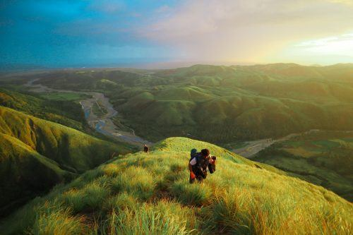
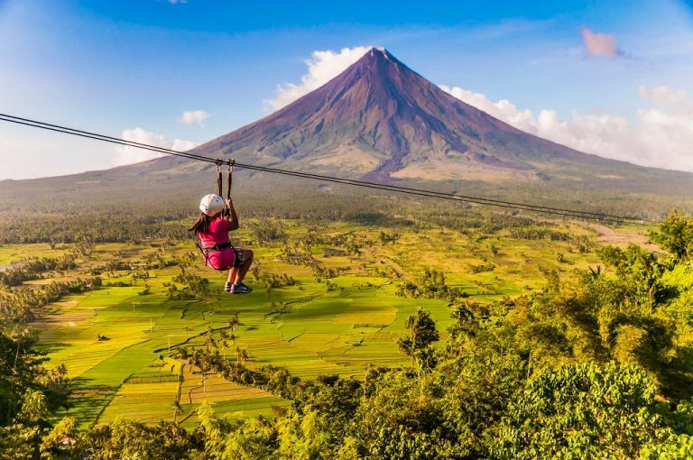
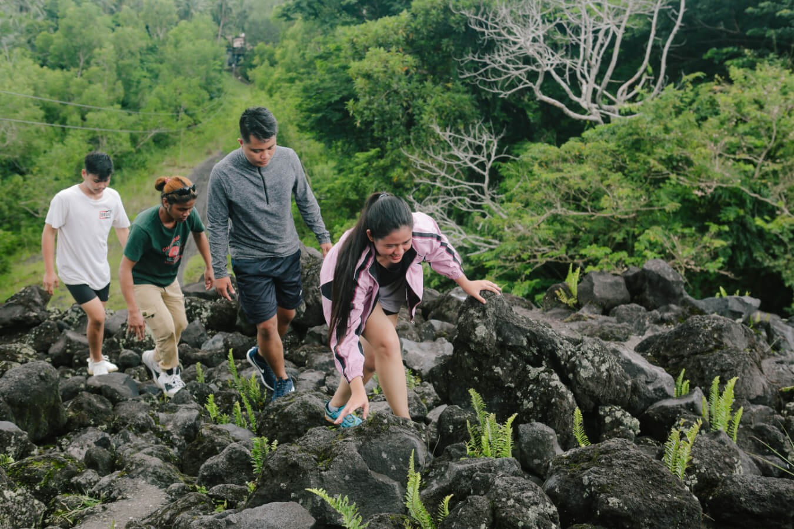

Experience thrilling outdoor activities, exciting trails, and unforgettable adventures in the beautiful province of Albay.
Adventure tourism in Albay is perfect for travelers who enjoy excitement, action, and outdoor fun. With its volcano views, hills, trails, and natural attractions, Albay offers many activities for visitors who want both adventure and scenery.

ATV rides are one of the most exciting activities in Albay, allowing visitors to explore trails and enjoy close views of Mayon Volcano.

Albay has hiking spots where visitors can enjoy mountain views, nature walks, and physical activity in refreshing surroundings.

Some tourist areas in Albay offer zipline rides and other outdoor activities for adventure seekers who want a more thrilling experience.

From scenic walking trails to rugged outdoor spots, Albay offers adventure activities that combine fun, exercise, and beautiful views.
Visitors can enjoy ATV rides, hiking, sightseeing, and other outdoor activities. Adventure tourism in Albay is great for people who want to explore nature in an exciting way. You can take photos, enjoy scenic viewpoints, and experience the thrill of being outdoors. It is also a fun way to bond with friends and family while trying something new.
Wear comfortable clothes and proper footwear for outdoor activities. Bring water, snacks, and extra clothes if needed. Always follow the rules, listen to guides, and check the weather before starting your trip. It is also important to stay safe, avoid risky areas, and respect the natural environment during your adventure.